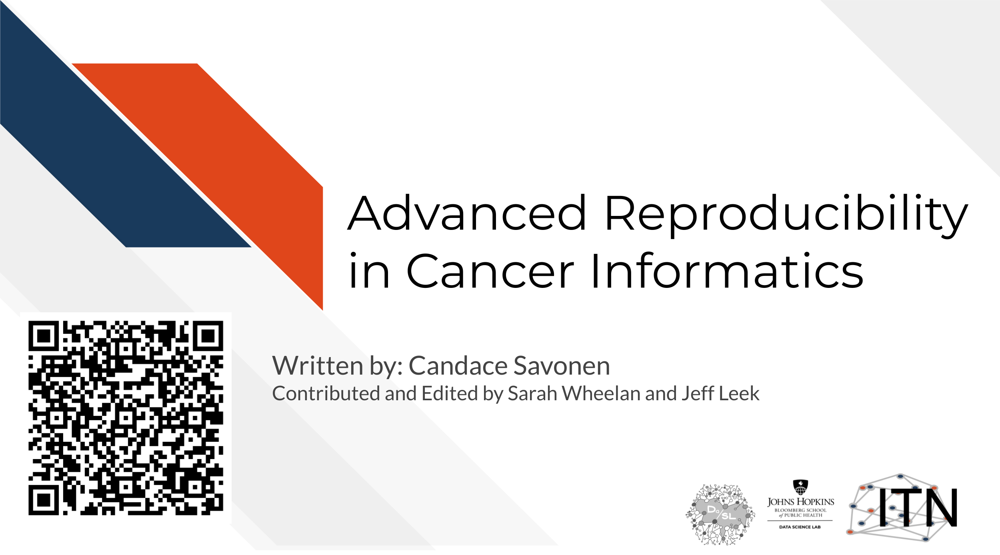

Chapter 1 Introduction

1.1 Motivation
Cancer datasets are plentiful, complicated, and hold untold amounts of information regarding cancer biology. Cancer researchers are working to apply their expertise to the analysis of these vast amounts of data but training opportunities to properly equip them in these efforts can be sparse. This includes training in reproducible data analysis methods.
Data analyses are generally not reproducible without direct contact with the original researchers and a substantial amount of time and effort (Beaulieu-Jones and Greene 2017). Reproducibility in cancer informatics (as with other fields) is still not monitored or incentivized despite that it is fundamental to the scientific method. Despite the lack of incentive, many researchers strive for reproducibility in their own work but often lack the skills or training to do so effectively.
Equipping researchers with the skills to create reproducible data analyses increases the efficiency of everyone involved. Reproducible analyses are more likely to be understood, applied, and replicated by others. This helps expedite the scientific process by helping researchers avoid false positive dead ends. Open source clarity in reproducible methods also saves researchers’ time so they don’t have to reinvent the proverbial wheel for methods that everyone in the field is already performing.
This course introduces the concepts of reproducibility and replicability in the context of cancer informatics. It uses hands-on exercises to demonstrate in practical terms how to increase the reproducibility of data analyses. The course also introduces tools relevant to reproducibility including analysis notebooks, package managers, git and GitHub.
1.2 Target Audience
The course is intended for students in the biomedical sciences and researchers who use informatics tools in their research. It is the follow up course to the Introduction to Reproducibility in Cancer Informatics course
1.3 Curriculum

The course includes hands-on exercises for how to apply reproducible code concepts to their code. Individuals who take this course are encouraged to complete these activities as they follow along with the course material to help increase the reproducibility of their analyses.
Goal of this course:
To equip learners with a deeper knowledge of the capabilities of reproducibility tools and how they can apply to their existing analyses scripts and projects.
1.4 How to use the course
This course is designed with busy professional learners in mind – who may have to pick up and put down the course when their schedule allows.
Each exercise has the option for you to continue along with the example files as you’ve been editing them in each chapter, OR you can download fresh chapter files that have been edited in accordance with the relative part of the course. This way, if you decide to skip a chapter or find that your own files you’ve been working on no longer make sense, you have a fresh starting point at each exercise.